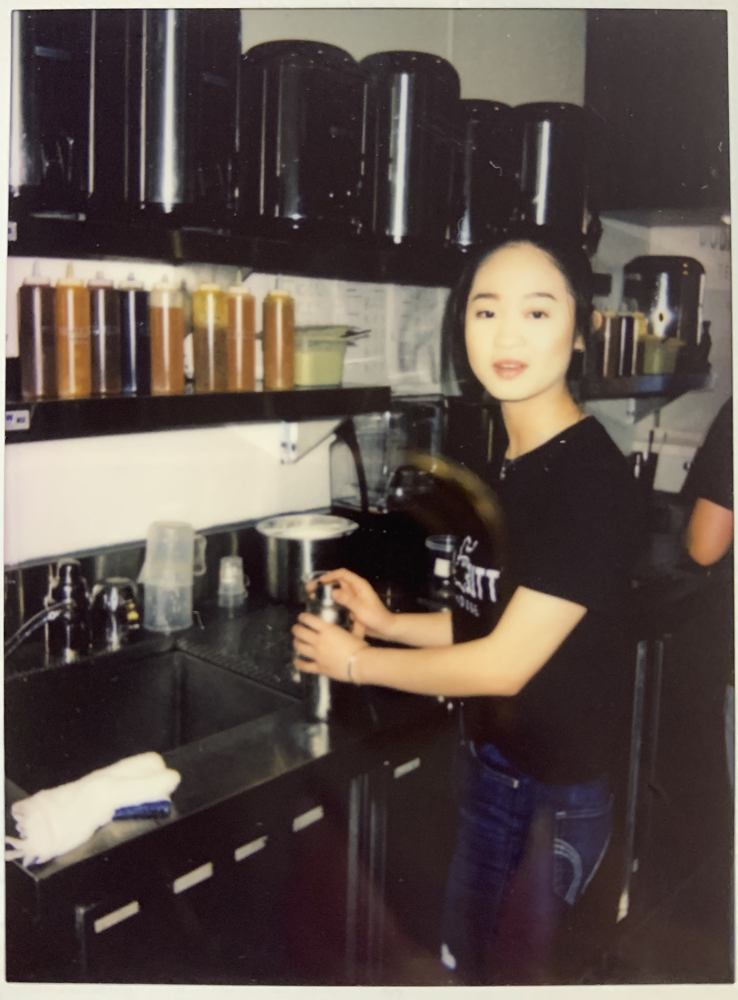
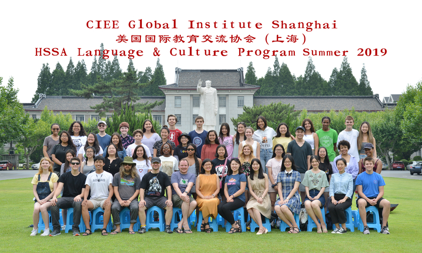
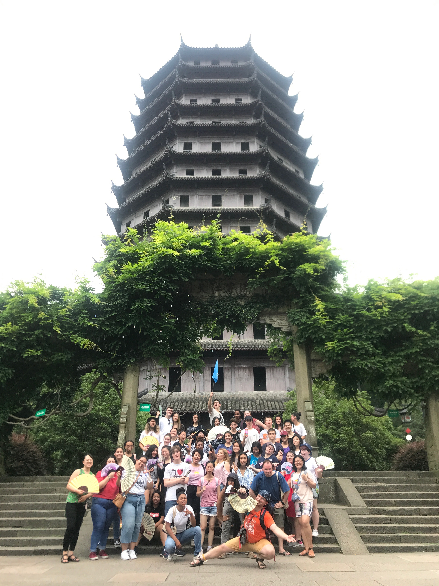
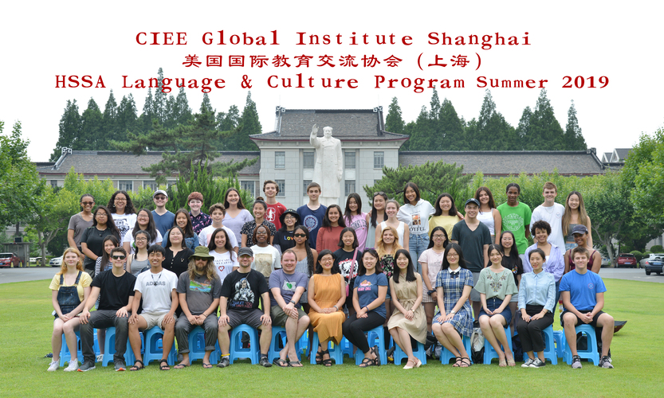
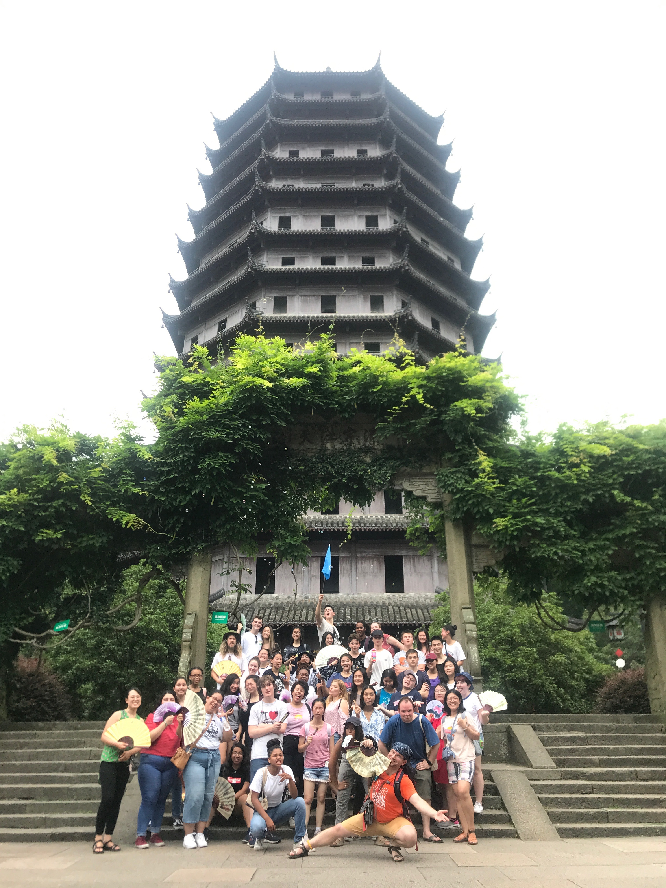

Xiaoyin Yang
I am currently a first year at University of California, UCR. I am also a part of UCR's Panhellenic community; new member of the sorority Kappa Kappa Gamma.
I have worked in customer service for over two years and I know that I am passionate about helpings others. I worked at a boba shop named Boba Butt for a year and a half in high school, and in my senior year, I worked as a receptionist at Latch and So Chiropractic. Although this pandemic is restricting me from working, I don't stop giving back to my community. I help my neighbors out and make sure to check up on them as often as possible.
My main goal is to be build confidence and leadership skills. I also love communicating with others and I feel like I can really take advantage of that. I hope to inspire others because it is rewarding.
Experience
Assistant & Receptionist
• Assisted patients at front desk
• Helped chiropractors with patient calls
• Organized patient's schedules and needs
Barista & Cashier
• Provided customer service as a barista and cashier
• Strengthened organization, teamwork, leadership and communication skills
Study Abroad Student
• Explored Shanghai for a monthy to study Chinese Language & Culture
• Learned to have an open and global mindset
• Gave weekly presenatations to my class on what I have learned that week
• Interacted with Shanghai locals and communities
Education
University of California, Riverside
Lowell High School
Francisco Middle School
Portfolio




 